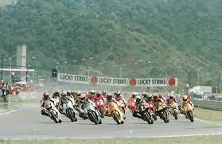

Hoje, dia 17 de março, entrou em vigor no Brasil a Lei Felca ou o Eca Digital, uma nova legislação com foco na proteção de crianças e adolescentes na internet. Está lei tem como objetivo criar novas e mais rígidas regras para as plataformas digitais, dando inicio a mecanismos e melhoranndo outros ja existentes, como a verificação de idade sendo implentada de maneira mais segura e o controle parental de maneira mais eficiente.
fonte: Band
Link:https://www.band.com.br/noticias/lei-17-de-marco-e-verdade-o-que-e-eca-digital-202603021555?utm_source=chatgpt.com
Hoje, dia 18 de março, uma pesquisa apontou que mais de 70% da população brasileira acredita que o avanço tecnologico ajudou a melhorar sua relação com o dinheiro. Algumas pessoas afirmam que aplicativos de banco mais dinamicos fintechs, pagamentos instantâneos e outras ferramentas digitais facilitaram o controle financeiro de suas familias. Essas novas ferramentas nos permitem acompanhar nossos gastos financeiros em tempo real e organizar melhor nosso dinheiro.
fonte: Fatel
Link:https://www.fatelcontabilidade.com.br/noticias/empresariais/2026/03/18/mais-de-70-dos-brasileiros-afirmam-que-a-tecnologia-ajudou-a-melhorar-a-relacao-com-o-dinheiro-aponta-pesquisa.html

Hoje, dia 20 de março, O Brasil voltou a sediar eventos internacionais que exigem alto nivel de infraestrutura digital e tecnologia. O retorno do Grande Prêmio de motovelocidade ou MotoGP Brasil como é conhecido populamente após mais de 20 anos é um bom exemplo. Esse tipo de evento precisa de analise e coleta de dados em tempo real, integração a tecnologia e sistemas avançados. Este tipo de evento envolve uma organização que envolve soluções digitais que possam garantir efiência e a segurança do evento.
fonte: Maquina do Esporte
Link:https://maquinadoesporte.com.br/motogp/zoox-smart-data-sera-gestora-de-dados-do-grande-premio-do-brasil-de-motogp/
Hoje, dia 17 de março, aprendi um pouco mais para poder inserir no meu site, acredito que ainda essa semana meu site estará finalizado, já está rodando e já foi lançado, mas ainda sinto que posso melhorar algumas coisas, mas estou perto de concluir meu primeiro site, após a conclusão do meu Blog como meu primeiro site, estou planejando criar um site profissional com meu grupo da faculdade o site está ainda em fase inicial de criação, ainda não começamos a criar o site de fato por falta de tempo, e por ainda querer melhorar este um pouco mais.
hoje, dia 18 de março, consegui concluir meu primeiro programa, utilizei HTML e CSS, inicialmente comecei apenas com HTML, mas com o decorrer das aulas, fui aprendendo mais sobre CSS e achei que seria interessante inserir no meu Blog para melhorar o design e para melhor a funcionabilidade de algumas partes do site que não estavam ficando como eu gostaria, ainda não está perfeito, sei que tenho muito a melhor e a aprender, mas sinto que foi um passo importante para começar a programar, estou evoluindo cada vez mais.
hoje, dia 20 de março começaria a criar meu novo site, este começarei a utilizar JavaScript e PHP e depois de um conversa com meu grupo estamos pretendendo adicionar Banco de dados no programa, terá algumas funções que serão desafiadoras de colocar, mas sei que juntos conseguiremos.